搜尋與失業
分析勞動市場中的干擾因素：搜尋，從而了解市場無法達到完美均衡的原因。
現實世界的市場中存在諸多干擾因素，使得市場無法在價格機能下完美運行，其中一項因素是勞動市場中的「搜尋」(search)。
假設今天一個求職者為了要謀得一份工作，必須投入一定的時間成本與精力；對於開出職缺的廠商或公司，也需要花費一定的人力資源尋找合適的勞工。因此，市場中必定存在想要找尋工作但未找到工作者，以及未找到合適勞工填補值缺的廠商。
勞動市場
我們必須釐清，雖然勞動市場與商品市場類似，其均衡都是由市場中的供給與需求互動後決定的，但兩者之間存在一些差異。
以勞動市場中的供給者（勞工）的角度觀之。商品與勞工在兩個層面上不同。首先，商品具有同質性(homogeneous，但勞工則具異質性(heterogeneous)，此即在描述個體間具有差別，每個人是不一樣的。
承接上述的差別，商品與勞工的第二個差別在於，商品不會挑選買家，但是勞工會。勞工會依據其自身專長、工作地點、通勤時間等諸多因素，決定是否要投遞履歷給某家廠商。
因此，交易成本(transaction cost)在勞動市場與商品市場不相同，勞動市場需要特別考慮其特性。
勞動市場特性
國家在定義勞動市場衡量指標前，多半都會先定義一國的民間人口(working age population)、勞動力(labor force)與非勞動力(non-labor force)。根據中華民國統計資訊網的說明，民間人口係指 15 歲以上本國人口扣除武裝勞動力（現役軍人）、監管人口與失蹤人口，其中包括勞動力與非勞動力；勞動力則是指 15 歲以上可以工作之民間人口，包括就業者及失業者 ；非勞動力則指 15 歲以上不屬於勞動力之民間人口，包括因求學或準備升學、料理家務、高齡、身心障礙、想工作而未找工作及其他原因等，而未工作亦未找工作者 。
我們令民間人口為 \(N\)，就業者為 \(E\)，失業者為 \(U\)。勞動市場的衡量指標大致有以下三種：
失業率(employment rate)：失業率是指民間人口中有就業意願的勞動人口，實際上沒有就業的比例，即 \[ \frac{U}{U + E} \]
勞動參與率(labor force participation rate)：勞動參與率是指勞動年齡人口中實際參與勞動力市場的比例，包括已經就業的人和那些主動尋找工作的失業人口，即 \[ \frac{E + U}{N} \]
勞動人口比例(employment population ratio)：勞動人口比例是指民間人口有就業意願的人中，實際上有工作的比例，即 \[ \frac{E}{N} \]
失業率與總體變數之關係
在總體經濟分析中，我們關心一國的失業率走勢。以美國為例，我們可以看到在長期而言，失業率波動十分劇烈，此外我們也可以看到 1960 年代到 1980 年代呈現長期上升的走勢，1980 年代至金融海嘯前則呈現下降的趨勢。
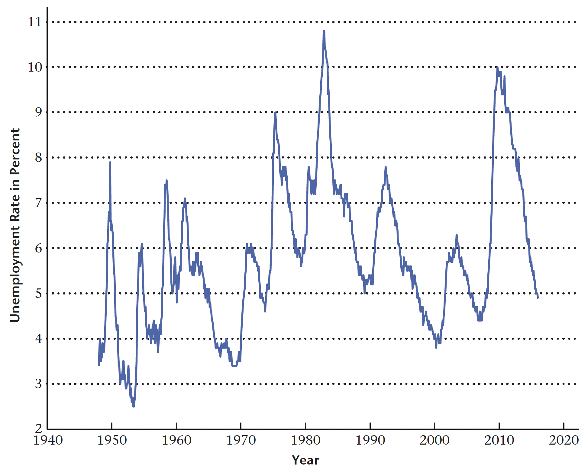
此外，我們也關心失業率與一國實質 GDP 的關係。
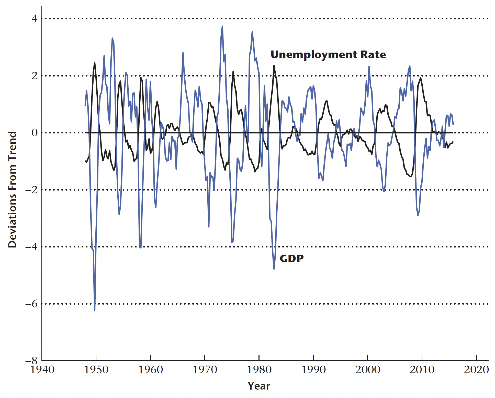
失業率為反景氣循環(countercyclical)指標，當實質 GDP 的百分比偏離趨勢為負時，失業率相對偏離趨勢通常為正，反之亦然。

上圖左上描述美國勞動力參與率長期趨勢。美國的勞動力參與率從 1940 年代末開始增加，一直增長至 2000 年，之後開始下降。
上圖右上則是描繪了美國男性與女性的勞動力參與率。圖中可以看到，從 1940 年代末到 2000 年，總體勞動力參與率的增加完全是由於女性的勞動力參與增加，因為男性的勞動力參與率自 1948 年以來一直在下降。
上圖左下則是描述勞動力參與率和實質 GDP 趨勢的偏差。勞動力參與率是是順循環指標(procyclical)的，但其變動幅度遠小於實質 GDP。
上圖右下則是說明勞動力參與率和就業人口比例，可看到勞動力參與率的波動遠小於就業人口比例的波動。
最後，我們要針對失業率與廠商待填補職缺之間的關係。我們用 \(A\) 表示廠商中開缺後卻仍存在空缺的職位，因此職缺率可以用以下數學式描述： \[ \frac{A}{A + E} \]
而我們可以透過 Beveridge 曲線(Beveridge curve) 用以描述失業率和職位空缺率之間的關係。Beveridge 曲線描述的平面上，橫軸表示職位空缺率(job vacancy rate)，縱軸則代表失業率(unemployment rate)。
其重要特徵是它呈現負向關係。通常情況下，當職位空缺率較高時，失業率較低，反之亦然。這意味著在經濟體系中，有時會出現失業率增加但職位空缺率下降的情況，或是失業率減少但職位空缺率上升的情況。
此外，Beveridge 曲線的變化可以提供有關勞動力市場的重要資訊。例如，當曲線向右上方移動時，可能表示失業問題更為嚴重，因為在同一水平的職位空缺率下，失業率上升了。相反地，曲線向左下方移動可能表示勞動力市場更加緊張，因為失業率降低了，但職位空缺率上升。
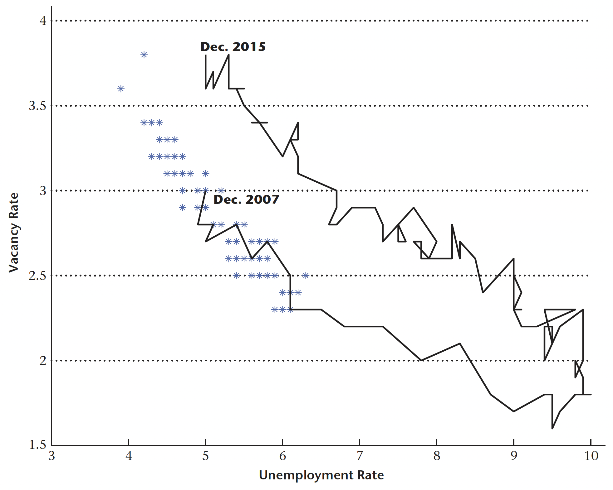
單邊勞動搜尋模型(One-sided Search Model)
之所以稱為「單邊」，是因為此模型僅聚焦於失業者尋找工作的行為：施業者收到特定薪資的工作機會，並決定何時接受工作並停止尋找。然而，這個模型忽略了一些重要細節：雇用中的廠商行為以及個人選擇參與勞動力市場，或因找尋工作而生沮喪之心而離開勞動力市場的決策。
模型基本設定
為了簡化分析，我們假設經濟體系中的全部個體為勞動力，換言之每個個體都想要且積極的找尋工作，其中成功找尋工作者稱之為就業人口，未找到者則稱為失業人口。我們以 \(U\) 代表失業人口比例，因此 \(1 - U\) 則是就業人口比例。
現實生活中不同工作必定會存在差異，包含工作時長、薪資優渥、勞動者通勤時間等，但在此模型中我們僅考慮工作之間的差異主要反映在廠商給付的實質薪資，記作 \(w\)。
就業者福利水準
我們以 \(V_{e}(w)\) 代表就業者的福利水準，其中下標 \(e\) 便是用以說明就業。可以觀察到 \(V_{e}(w)\) 為實質工資的函數，白話來說即是不同工作帶給就業者的效用。此外，\(V_{e}(w)\) 更考慮未來發生的事件，例如勞工可能因為諸多因素而被迫離職，我們以 \(s\) 代表每期就業者從勞動市場中離職的隨機機率(random separation rate)。以下我們針對 \(V_{e}(w)\) 的性質進行討論。
工資越高，福利越高
工資越高，代表就業者所能夠負擔的消費量也隨之上升。因為就業者的效用高低取決於其消費量，故工資提高福利上升為一直觀結果。
凹函數(Concave Function)性質
此性質代表 \(V_{e}(w)\) 的曲線斜率將隨著工資上升而下降。其隱含隨著工資上升，每增加一單位的工資，對於就業者福利的影響也會趨小，類似邊際效用遞減。
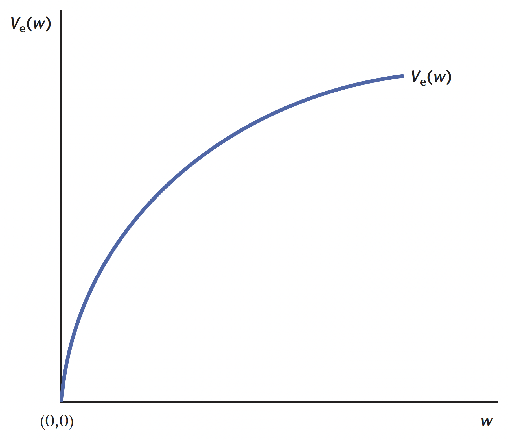
離職機率變化
假設 \(s\) 上升，代表當前的就業者在未來離開當前職位的機率較高，也就是變成失業狀態的機率提高。直觀而言，離職機率的上升將會降低就業者現階段的福利，福利函數因而往下移動。
失業者福利水準
我們以 \(V_{u}\) 代表就業者的福利水準，其中下標 \(u\) 便是用以說明失業。決定失業者福利水準高低的因素並非薪水（因為他們也沒有工作），而是政府給予失業者的失業保險(unemployment insurance)或救濟、補助，我們以 \(b\) 表示失業保險的規模，並假設其為定值，即不因先前失業者若有工作時的薪資而異。另一項決定失業者福利水準的因素是，其有多少機率能夠獲得工作，我們以 \(p\) 表示之。
補助越高，福利越高
失業者的福利會因政府補助額越高而上升，原因在於當補助額較高時，失業者即可享受到更高的生活水準，其消費量也會增加。
獲得工作機率越高，福利越高
若 \(p\) 越高，則失業者的福利也會越高。假設失業者面臨較高獲得工作的機率，即代表失業者在下一期更容易獲得新的工作機會，無須擔心找不到工作。
保留薪資(Reservation Wage)
在單邊勞動搜尋模型中，當失業者獲得新的工作機會時，該工作必定會註明從事工作所能夠獲得的工資，失業者的決定即是「是否接受此工作機會」。換言之，失業者所決定的即是「是否接受特定薪資的工作」，若接受則從失業狀態轉為就業狀態；若拒絕則繼續維持失業狀態，且忍受失業所帶給個體的痛苦。
蔡宜展老師在課堂中舉了很有趣的例子，即是柏拉圖採花的故事。事實上失業者找尋工作的過程就猶如人每個個體尋找愛情一般：總以為可以找到更好的，因此拒絕了許多機會，但我們卻無法確定是否能夠找到比原機會更加優質的選項，到頭來卻只能空手而歸。
為了避免上述情形，經濟學家認為失業者應該比較失業時與特定薪資之下所帶來的福利水準：
若特定薪資帶來的福利較失業來得高或至少與之相等，即 \(V_{e}(w) \geq V_{u}\)，則失業者應接受此工作機會。
若特定薪資帶來的福利較失業來的低，即 \(V_{e}(w) < V_{u}\)，則失業者應接受此工作機會。
因此，在某些情況下，對於失業者來說，存在一個工作提供足夠高的薪資，使他們願意接受工作機會，並且只要工資高於這個金額，他們就會接受任何工資條件，我們稱這個臨界值為保留薪資，記成 \(w^{*}\)。故我們可以得出以下小結：
若 \(w \geq w^{*}\)，則 \(V_{e}(w) \geq V_{u}\)。
若 \(w < w^{*}\)，則 \(V_{e}(w) < V_{u}\)。
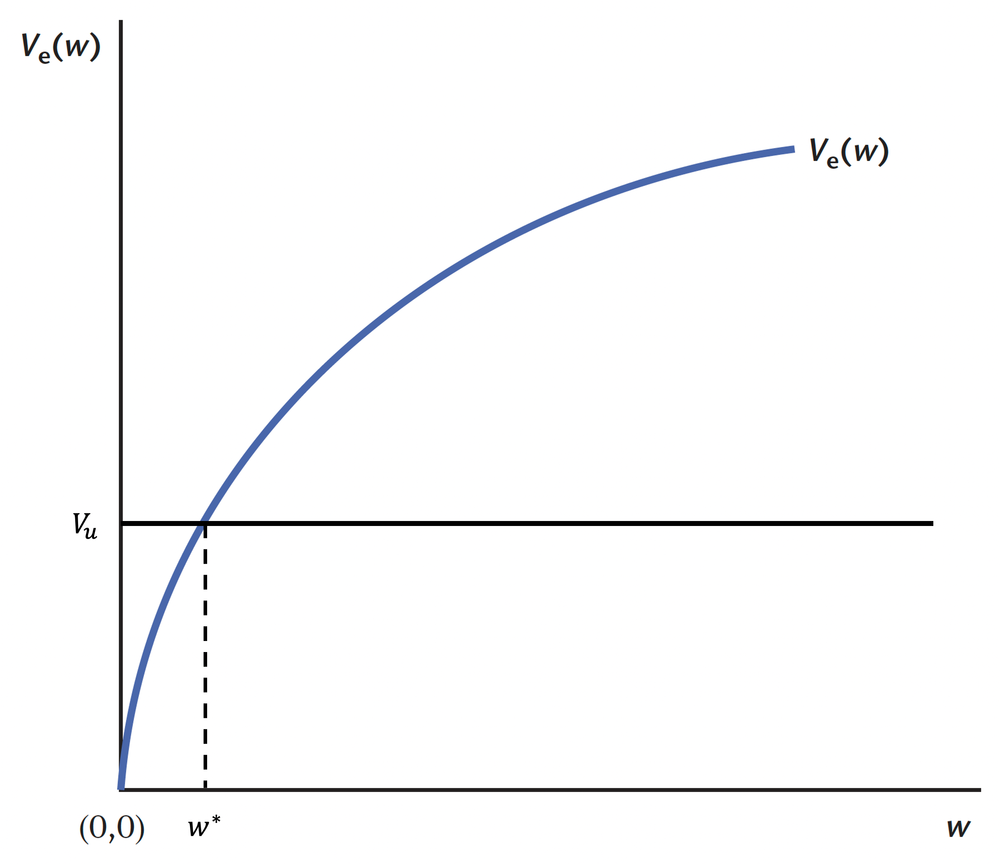
失業率之決定
已知我們可以將民間人口分為勞動力與非勞動力，其中勞動力又可細分為就業人口與失業人口。經濟體系中的個體必定屬於上述三種人口類型中的其中一種，因此，討論失業即是探討上述三個不同狀態的轉換過程。
由於單邊搜尋模型假設所有的人口均在勞動力中，因此我們不考慮非勞動力。
我們將勞動力人口標準化為 \(1\)，因此 \(U\) 代表經濟體系中失業人數，即失業率，\(1 - U\) 代表就業人數，也就是就業率。
為了求出經濟體系的均衡失業率，可以透過分析經濟個體在失業與就業兩個狀態的轉換。已知 \(s\) 代表當前就業者離職的比例，乘上 \((1 - u)\) 後即代表目前就業狀態轉換成失業狀態的人數，也就是下一期新增的失業人口。
除了從就業狀態轉換為失業狀態，有些勞動力也會從失業狀態轉換為就業狀態。已知 \(p\) 代表當前失業勞工下一期會獲得新工作的機率，但必須注意到，這些新工作所支付的薪資都不同，只有工資超過保留薪資的工作，失業者才會接受此機會，我們以 \(H(w^{*})\) 代表失業者獲得的工作中，工資較保留薪資高的比例。因此失業者轉換為就業者的計算方式即為： \[ u \cdot p \cdot H(w^{*}) \]
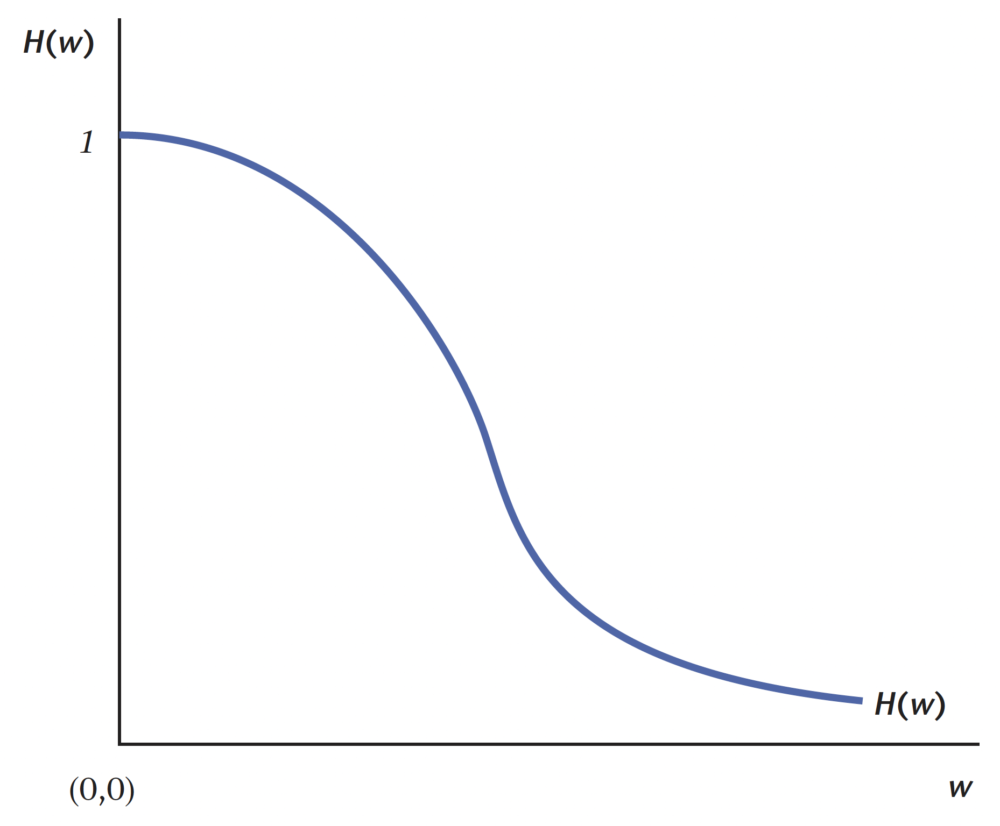
注意到隨著薪資增加，\(H(w)\) 呈現遞減。
依照上述的設定，我們可以從簡單的數學得知，當以下條件成立時，經濟體系將會達到均衡失業率，兩個狀態的人口將不會再進行轉換： \[ s(1 - u) = u \cdot p \cdot H(w^{*}) \]
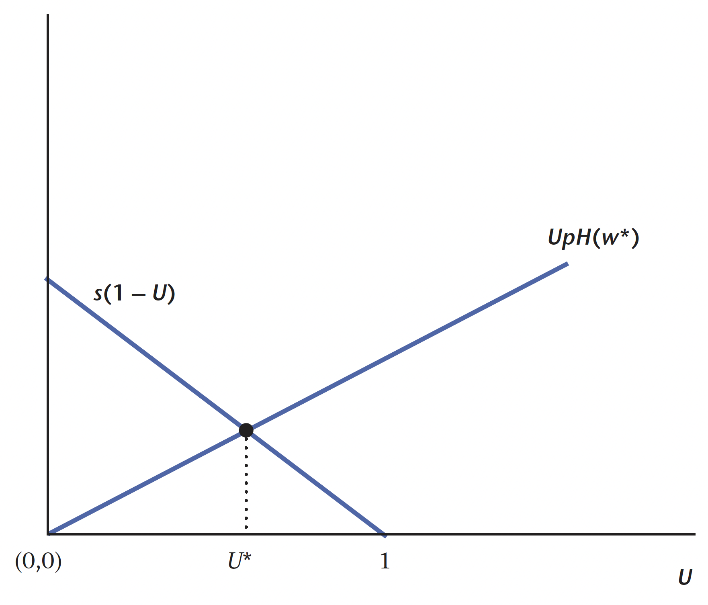
注意到 \(p\) 與 \(s\) 是模型外生給定，且 \(w^{*}\) 可透過前述比較得知，因此在上述條件中唯一的待定變數為 \(u\)。
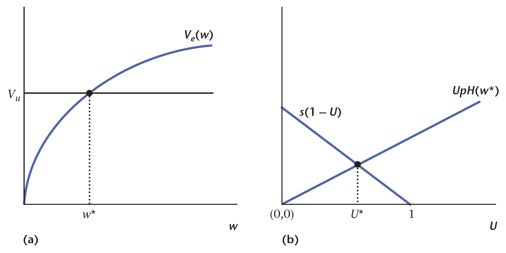
考慮跨期消費之單邊搜尋模型
以下我們需要考慮行為者的跨期消費選擇，從而求解經濟體系中的均衡失業率。
在此經濟體系中，假設行為者永生(infinite-lived)，則其偏好可以表達為 \[ \mathbb{E}_{0}\left[\sum^{\infty}_{t = 0}\left(\frac{1}{1+r}\right)^{t}U(C_{t})\right] \]
其中 \(\mathbb{E}\) 為期望值符號(expectation operator)，下標 \(0\) 代表給定第 \(0\) 期，\(r\) 為折現率(discount rate)，又可以透過折現因子(discount factor)的方式呈現： \[ \beta = \frac{1}{1+r} \] 而 \(C_{t}\) 代表第 \(t\) 期的消費，\(U(\cdot)\) 則是效用函數，其為嚴格遞增(strictly increasing)、連續，且為嚴格凹函數(strictly concave)。
前面已經提到，由於行為者面對不確定性，即就業狀態與失業狀態兩者互相轉換的隨機性，因此這個體系中的行為者是預期效用極大化者(expected-utility maximizer)。
我們在上面的小節已經提及有關就業者與失業者的福利函數，分別為 \(V_{e}(w)\) 與 \(V_{u}\)，但我們並未提及該函數的形式。事實上，就業者的福利函數可以寫成以下形式： \[ V_{e}(w) = \frac{1}{1+r}\left[U(w) + sV_{u} + (1 - s)V_{e}(w)\right] \]
從此式可以得知，就業者在下一期所要考慮的不僅是其消費所帶給他的效用，更要將可能失業與仍維持就業狀態的情況。對於失業者而言，已知政府會給予失業者補助 \(b\)，且其有 \(p\) 的機率獲得新的工作機會，我們假設該機會係從一個累積分佈函數(cumulative density function, CDF)中抽出，記成 \(F(w)\)，且該函數對應一個機率密度函數(probability density function, PDF)，記成 \(f(w)\)。令 \(w \in [0, w_{1}]\)，且 \(w_{1} > 0\)，則失業者將考慮是否要接受(accept)或拒絕(turn down)該機會。因此，失業者的福利函數可以透過以下形式表達： \[ V_{u} = \frac{1}{1+r}\left\{U(b) + (1 - p)V_{u} + p \int^{w_{1}}_{0}\max\left[V_{e}(w), V_{u}\right]f(w)dw \right\} \]
也就是說，失業者考慮其領取補助後的消費帶來的效用外，更考慮其有 \((1 - p)\) 的機率未得到工作機會而維持失業狀態，以及 \(p\) 的機率獲得工作。注意到下式： \[ \int^{w_{1}}_{0}\max\left[V_{e}(w), V_{u}\right]f(w)dw \]
由於工作所帶來的價值係由我們上述設定的累積分佈函數所決定，因此我們僅能計算期望值。我們在保留薪資該小節提到，行為者可以藉由比較失業時與特定薪資之下所帶來的福利水準，此即 \(\max\left[V_{e}(w), V_{u}\right]\) 的含義。
【解】
首先我們可以先對於 \(V_{e}(w)\) 與 \(V_{u}\) 進行化簡，得到 \[ \begin{aligned} r V_e(w) &= U(w)+s\left[V_u-V_e(w)\right] \\ r V_u &= U(b)+p \int_0^{w_1} \max \left[0, V_e(w)-V_u\right] f(w) d w \end{aligned} \]
其中 \(V_{e}(w)\) 又可以進一步化簡為 \[ V_{e}(w) = \frac{U(w) + sV_{u}}{r + s} \]
隱含 \(V_{e}(w)\) 繼承 \(U(\cdot)\) 的性質，因此上述問題可以定調為找到合適的保留薪資 \(w{*}\)。
已知在均衡薪資 \(w^{*}\) 下，下式會成立： \[ V_{e}(w^{*}) = V_{u} \]
因此， \[ V_{u} = \frac{U(w) + sV_{u}}{r + s} \] 為了決定失業率，我們要求在穩定狀態下，從就業轉換為失業的勞工必須與從失業轉換為就業的勞工相等，即 \[ s(1-u)=p\left[1-F\left(w^*\right)\right] u \] 解出失業率 \(u\)，我們得到 \[ u=\frac{s}{p\left[1-F\left(w^*\right)\right]+s} . \]
假設在收到薪資時，失業者以機率 \(\pi\) 收到薪資為 \(\mathrm{w}_2\) 的工作機會，以機率 \(1-\pi\) 收到薪資為 \(0\) 的工作機會，其中 \(0<\pi<1\)。接著，假設薪資 \(w_2\) 的工作機會 總是被接受，零薪資工作則總是被拒絕，在這種情況下， \[ \begin{gathered} r V_e=U\left(w_2\right)+s\left[V_u-V_e\right], \\ r V_u=U(b)+p \pi\left(V_e-V_u\right) \end{gathered} \] 其中 \(V_e\) 是以實際工資 \(w_2\) 就業的價值。然後，將上述兩個方程式求解得到 \(V_e\) 和 \(V_u\)，我們得到 \[ \begin{aligned} & V_e=\frac{(p \pi+r) U\left(w_2\right)+s U(b)}{r(s+p \pi+r)}, \\ & V_u=\frac{(s+r) U(b)+p \pi U\left(w_2\right)}{r(s+p \pi+r)} \end{aligned} \] 其中 \[ V_e-V_u=\frac{U\left(w_2\right)-U(b)}{s+p \pi+r} . \] 因此，我們有 \(V_u>0\)，如此即可證明一個零薪資工作將被拒絕。此外，只有當 \(w_2 \geq b\) 時，也就是說，當工作的工資高於失業補助時，才會接受工資報價 \(w_2\)。綜上，失業率為 \[ u=\frac{s}{p \pi+s} \] 但如果 \(b>w_2\)，則沒有人會接受工作，我們得到 \(u=1\)，代表所有人都會失業。
雙邊勞動搜尋模型(Two-sided Search Model)
不同於單邊勞動搜尋模型，雙邊搜尋模型不再假設經濟體中的行為者均為勞動力。令 \(N\) 代表經濟體中的民間人口，\(Q\) 代表勞動力，因此 \(N - Q\) 代表非勞動力。因此在雙邊勞動搜尋模型中，行為者可能屬於下列三種狀態：就業狀態、失業狀態、非勞動力，而行為者的狀態並非固定，其會在這三種狀態之間流動。
由於此經濟體系存在三種狀態，我們需要考慮以下兩種情況：
勞動力與非勞動力之間的轉換：行為者可以決定是否要投入勞動市場，亦即供給其勞動力。
就業與失業狀態之間的轉換：從尋找工作者的角度分析其有多少工作機會。
模型設定與配對函數(Matching Function)
經濟體系中尋找工作的人數，取決於成功找尋並獲得工作後的預期報酬(expected payoff)有多高，我們以 \(P(Q)\) 描述能夠使 \(Q\) 人尋找工作的報酬誘因。直觀來說，當預期報酬越高，想要尋找工作的人就越多。
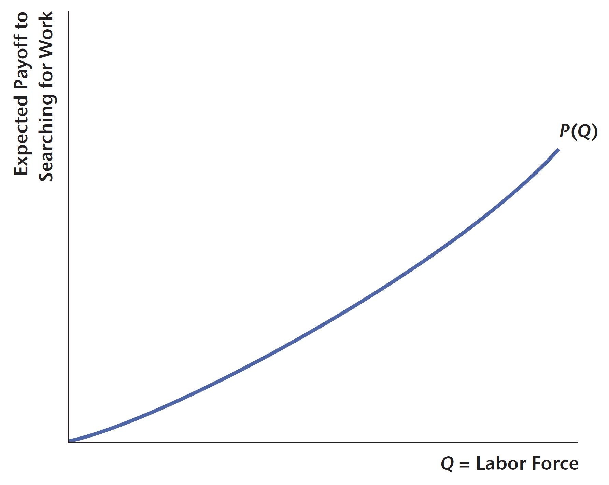
我們可以看到此供給曲線呈上升趨勢，這是因為不同的行為者對於在家工作的報酬是不同的。
接著我們要針對行為者找到工作的機率進行描述。在雙邊勞動搜尋模型中，每期勞動者與廠商「碰面」的機率，我們用配對函數來刻畫廠商和潛在勞動者透過配對函數「相遇」的過程，並以 \(m(\cdot, \cdot)\) 表達。配對函數如同廠商的生產函數一樣，其投入取決於以下因素：
求職廣告投放數量(firm posts a vacancy)：\(A_{t} \geq 0\)
市場中的求職人數：\(Q_{t} \geq 0\)
經濟體系中的配對效率(efficiency)：\(e\)
因此該經濟體系中的配對人數可以透過以下式子表達：4 \[ M = em(Q, A) \geq 0 \]
配對函數具有以下特性：
每期能夠成功配對的人數不超過廠商刊登的徵才公告數，即 \(M \leq A\)
每期配對的人數不超過徵才者人數，即\(M \leq Q\)
若廠商刊登徵才訊息與徵才者人數為 \(0\)，則成功配對人數必為 \(0\)，即 \(m(0, A) = m(Q, 0) = 0\)
每期配對成功人數與廠商刊登徵才訊息與徵才者人數成正相關，即 \(M \propto A, Q\)
邊際產出遞減，即隨著 \(A\) 或 \(Q\) 的上升，產量會下降
固定規模報酬，即 \(m(\lambda Q, \lambda A) = \lambda m(Q, A), \forall \lambda > 0\)
如果行為者想要求職，其能夠成功找到工作的機率為 \[ p_{c} = \frac{em(Q, A)}{Q} = em\left(1, \frac{A}{Q}\right) = em(1, j) \]
其中我們令 \(j = A/Q\)，代表廠商徵才公告數與徵才者人數的比例，也就是捕捉了經濟體系的勞動市場「擁擠程度」(tightness)。
勞動市場中的勞動供給面(The Supply Side of the Labor Market)
整個經濟體系中的求職者有可能會找到工作，也有可能沒有找到工作。假設成功獲取工作，其可以賺取 \(w\) 的實質薪資；若未成功找到工作，則其能夠獲得政府發放的失業補助 \(b\)。
已知求職者成功找到工作的機率為 \[ p_{c} = em(1, j) \]
換言之，失業的機率則為 \[ 1 - p_{c} = 1 - em(1, j) \]
因此找到工作的預期報酬函數可以透過以下方式計算： \[ P(Q) = p_{c}w + (1 - p_{c})b = b + em(1, j)(w - b) \]

勞動市場中的勞動需求面(The Demand Side of the Labor Market)
勞動市場的需求面即是刻畫廠商需要雇用多少的勞動力，在此模型中即是廠商需要刊登多少求職廣告。
假設廠商刊登徵才廣告需要支付 \(k\) 的成本，且存在機率能夠成功招募到勞工： \[ p_{f} = \frac{em(Q, A)}{A} = em\left(\frac{Q}{A}, 1\right) = em\left(\frac{1}{j}, 1\right) \]
其中 \(1/j\) 可以解釋為對於廠商而言，平均而言有多少求職者。因此 \(1 - p_{f}\) 即代表廠商未成功招募到員工的機率。我們令 \(z\) 為廠商成功招募員工後的產出數量，則其產出利潤為 \(z - w\)。
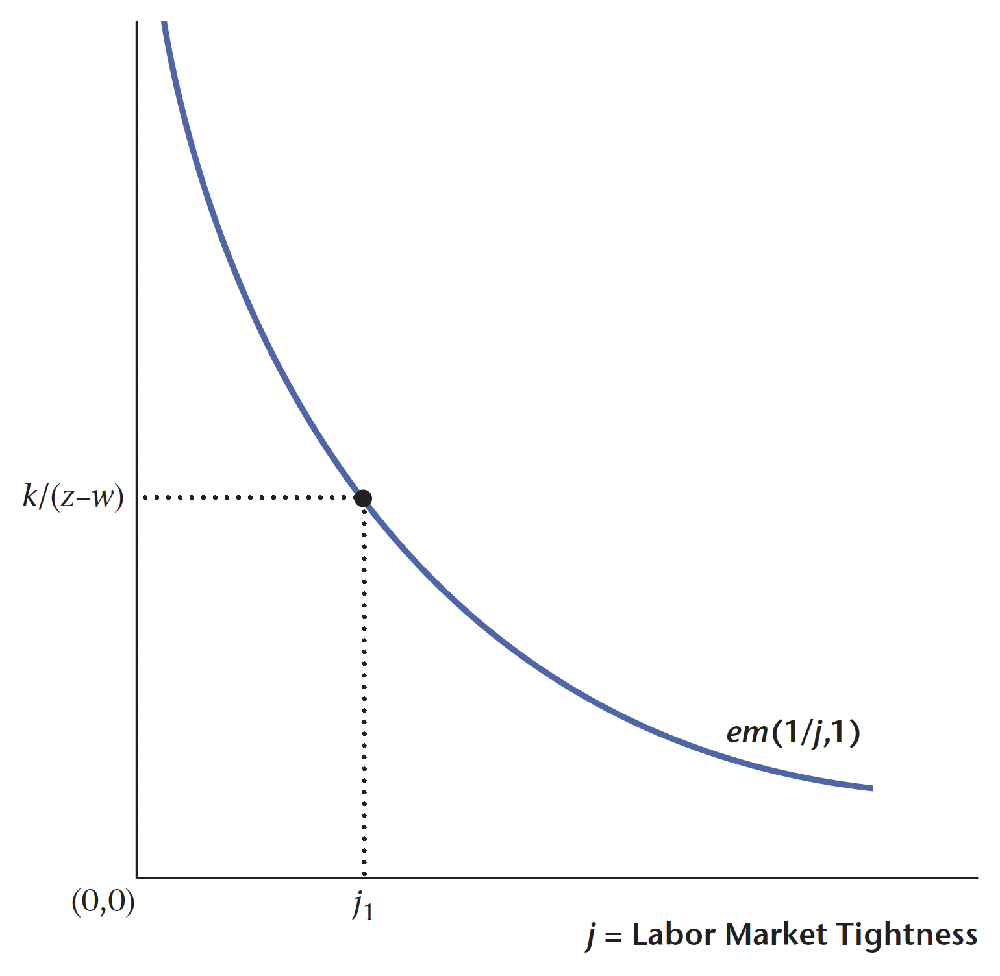
已知刊登徵才廣告的成本為 \(k\)，但是並非所有廠商刊登廣告後都能成功應聘員工，因此廠商的利潤為 \[ p_{f}(z - w) \]
亦即考慮配對成功與否的機率。
勞動市場中會有許多廠商在外蠢蠢欲動，認為有利可圖時進場，發現即將虧損時退場。因此市場會不斷地上演廠商進出市場，直到預期淨報酬為 \(0\)，即 \[ p_{f}(z - w) - k = 0 \]
此時不會有廠商進入勞動市場刊登徵才廣告。我們將上式重新整理，會得到以下式子： \[ p_{f} = em\left(\frac{1}{j}, 1\right) = \frac{k}{z - w} \]
廠商進入市場的目的就是為了刊登廣告並尋找勞動力，因此我們可以將上述問題視為尋找 \(Q\) 是如何決定的。
議價談判(Bargaining Solution)
在勞動市場中，「工資」是一項很好的談判籌碼(bargaining chip)：當工資高時，對於廠商而言是不利的，其能夠獲得的利潤較小；當工資低時，對於勞工而言是不利的，因其無法掙到許多錢以供其消費。可以看出，工資對於勞動市場的雙邊行為者而言，都是決定其效用高低的重要因素。
當經濟行為者進行談判時，其結果取決於若兩者無法達成協議時所面臨的替代方案（談判破裂點），以及兩個人的相對議價能力(bargaining power)。談判之目的是在雙方或多方斡旋後得出之妥協，因此在勞動市場中廠商與求職者進行談判時，必須討論出每個行為者都能接受的工資。
求職者從談判中獲得的好處是 \(w - b\)
廠商從談判中獲得的好處是 \(z - w\)
因此總剩餘是 \(z - b\)，這代表了求職者和廠商共同通過達成協議可能獲得的利益。
我們令 \(a\) 代表求職者的議價能力，其中 \(0 < a < 1\)。Nash 議價理論認為，廠商和求職者的分潤與議價能力成正比，因此廠商的議價能力即為 \(1- a\)。故我們可以在考慮廠商與求職者的議價能力後，重新計算雙方的好處。求職者的好處為： \[ w - b = a(z - b) \Longrightarrow w = az + (1 - a)b \]
廠商的好處為： \[ z - w = (1 - a)(z - b) \Longrightarrow w = az + (1 - a)b \]
可以發現從兩方的角度求算，所得出的工資結果都是一樣的。
雙邊勞動搜尋模型均衡求解
首先，政府失業補助(\(b\))、配對效率(\(e\))、刊登廣告成本(\(k\))、求職者議價能力(\(a\))、廠商成功雇用勞工後之產出(\(z\))均為外生給定。接著我們有三個條件：
Nash 議價解：廠商與求職者在談判後得出的工資，即 \[ w = az + (1 - a)b \]
廠商自由進出勞動市場條件：廠商在預期利潤為 \(0\) 下，會得到進出市場的條件： \[ em\left(\frac{1}{j}, 1\right) = \frac{k}{z - w} \]
求職者預期報酬函數：我們可以透過預期報酬函數，刻畫勞動力是否會進入勞動市場求職，即 \[ P(Q) = b + em(1, j)(w - b) \]
我們將廠商的勞動需求與求職者的勞動供給結合，得到： \[ \begin{cases} P(Q) = b + em(1, j)(w - b)\\ em\left(\frac{1}{j}, 1\right) = \frac{k}{z - w} \end{cases} \]
我們可以將求職者的 \(w\) 以 \(a(z - b)\) 代入，廠商的 \(w\) 則以 \(z - w = (1 - a)(z - b)\) 代入，故可以將上述結果改寫為： \[ \begin{cases} P(Q) = b + em(1, j)\cdot a(z - b)\\ em\left(\frac{1}{j}, 1\right) = \frac{k}{(1 - a)(z - b)} \end{cases} \]
因此可以求解出 \(j\) 與 \(Q\)。我們可以透過下圖了解兩個函數之間的互動關係：
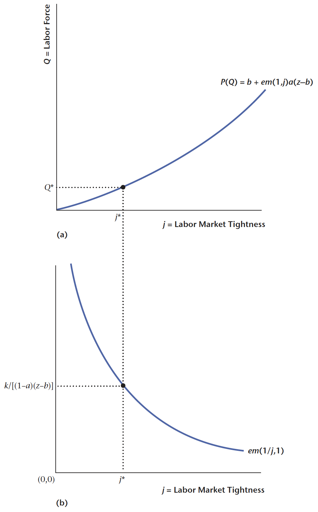
一旦我們知道 \(j\) 和 \(Q\) 後，我們可以計算失業率、職缺率和總產出，它們的計算方式分別是：
失業率：\(u = 1 - p_c = 1 - em(1,j)\)
職缺率：\(v = 1 - p_f = 1 - em\left(\frac{1}{j}, 1\right)\)
總產出：\(Y = Mz = em(Q, A)z = Qem(1, j)z\)
注意到，前述在描述失業率與職缺率時，兩者呈現負相關（參見 Beveridge 曲線），可看出雙邊勞動搜尋模型與實證結果相當契合。
Reuse
Citation
@online{sung2023,
author = {Sung, Anthony},
title = {搜尋與失業},
date = {2023-07-29},
url = {https://yueswater-blog.netlify.app/posts/2023-07-29-macro-search-and-unemployment/},
langid = {en}
}